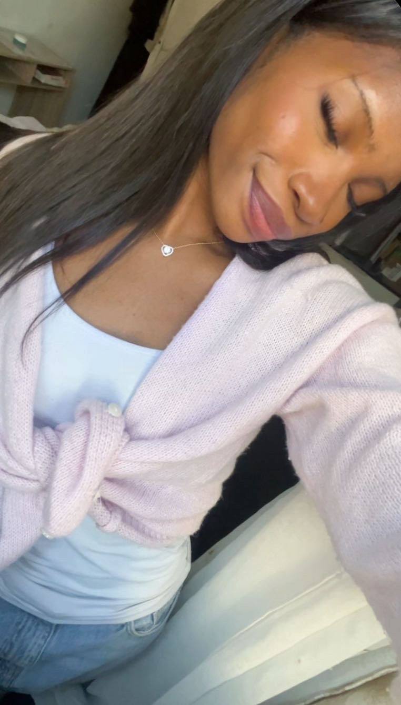

I didn't expect you.
I honestly didn't think that meeting someone through an app would lead to something that feels this special.
And yet somehow, there you were.
Somewhere between our conversations, the laughs, the little moments and all the time we've spent talking...
you became someone I genuinely look forward to hearing from.
Your smile.

The way you can just shine without even trying.
The way you can make me smile from the other side of a screen.
And somehow, even on an ordinary day, talking to you can make everything feel a little better.
Germany · France
A few hundred kilometers.
It sounds like a distance.
But somehow, when I'm talking to you, it doesn't feel quite that far.
Maybe because some people can feel close to you even when they're not physically beside you.
We're not officially anything.
Not yet.
And I don't want to rush something that already feels beautiful.
But I do know this:
Someone I care about.
Someone I want to keep getting to know.
Someone whose smile I want to keep seeing.
And maybe that's enough for now.
A little closer.
Sometimes I wish the distance between us wasn't there.
I wish I could just sit next to you.
Look at you.
Make you laugh.
Get a little too close.
And maybe just stay there for a while.
No distance.
Just you and me.
A song for this moment.
I wanted you to have something to listen to while reading the last part.
I'm really glad I met you.
I don't know exactly where this is going.
Maybe that's what makes it exciting.
We don't have to know everything yet.
We can just keep talking.
Keep laughing.
Keep annoying each other.
Keep learning little things about one another.
And see where it takes us.
But whatever happens...
I'm really glad I met you.
You already managed to bring a lot of happiness into my life without even being here.
And I hope I can give some of that happiness back to you.
♡
And thank you for letting me get a little closer to you.
If you're smiling right now...
then it worked.
I hope I get to see that smile in person someday.
🇫🇷 ♡ 🇩🇪